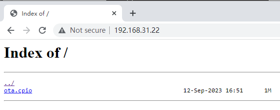

测试指南
准备测试环境
-
硬件
-
开发板
-
TF 卡
-
网线（如需测试网络 OTA ）
-
-
软件
-
PC 端的串口终端软件，用于 PC 和开发板进行串口通信。
-
HTTP 服务器工具，用于网络 OTA 测试。如不需测试，可略过。
-
测试流程
详细流程如下
- 打开
OTA
相关配置后，保存退出。注： 按照参数配置流程可打开 OTA 相关配置。
- 重新编译和烧录镜像。以下为一个制作 CPIO 镜像的示例，在编译过程中可以看到如下打包信息，表示编译过程已经完成且更新了 ota.cpio 的大小：
make CPIO image begin... ota_info.bin d21x_os.itb rodata.fatfs data.fatfs 14663 blocks Successfully updated size to ota.cpio make CPIO image done...三个需升级的文件如下所示：- d21x_os.itb：系统文件系统
- rodata.fatfs：只读文件系统
- data.fatfs：读写文件系统
- 将 ota.cpio 放到 TF 卡根目录中。
测试程序
test_ota默认从 TF 卡根目录读取，源码路径为 packages\artinchip\ota\test_ota.c。 - 搭建 HTTP 服务器，准备网络 OTA。注： 推荐使用 NGINX 工具在 Windows 环境下搭建 HTTP 服务器。
- 从官网下载 NGINX 软件包，地址：https://nginx.org/en/download.html。
- 解压缩下载的软件包。注： 解压包的路径不能包含中文字符。
- 在 CMD 环境下，启动 NGINX 服务。
服务启动成功后，使用任务管理器中的两个 nginx 进程，测试服务器是否正常工作。
- 适配 nginx.conf 文件配置后重新加载配置，并开放服务器目录。
HTTP 服务器窗口如下所示：

- 执行命令 co 进入 images 目录下，找到 ota.cpio 升级包并将其复制到 NGINX 服务器目录。
测试验证
- 确认系统启动位置（上电默认打印）下列示例表示从 os 升级：
Start-up from os
- 输入 fw_printenv
命令查看当前的环境变量设置。
fw_printenv
输出示例如下MTD=spi0.0:1m(spl),256k(env),256k(env_r),4m(os),4m(os_r),12m(rodata),12m(rodata_r),40m(data),40m(data_r)osAB_next=A rodataAB_next=A dataAB_next=A upgrade_available=0bootlimit=5bootcount=0rodata_partname=blk_rodata rodata_partname_r=blk_rodata_r data_partname=blk_data data_partname_r=blk_data_r osAB_now=A rodataAB_now=A dataAB_now=A
- 使用 mount
指令查看当前挂载的文件系统信息。
mount
输出示例如下：filesystem device mountpoint ---------- ------------ ---------- devfs (NULL) /dev rom (NULL) / elm blk_rodata /rodata elm blk_data /data elm sd0 /sdcard
验证 TF 卡 OTA
- 烧录完成后，断开电源，上电，插入 TF 卡。
- 在串口中直接输入升级命令 test_ota，开始 OTA
升级。
test_ota
- 确认 cpio 文件信息。
- 擦除 nand flash 分区。
- 分别升级 d21x_os.itb、rodata.fatfs、data.fatfs 文件。
- 验证文件完整性。
- 升级完成后，系统会自动重启并加载新的固件。
结果输出示例如下：01-01 15:59:27 I/NO_TAG: find file ota_info.bin cpio data success 01-01 15:59:27 I/NO_TAG: cpio file size:10538496 01-01 15:59:27 I/NO_TAG: cpio file version:1.0.0 01-01 15:59:27 I/NO_TAG: Parsing cpio file info is successful! 01-01 15:59:27 I/NO_TAG: find file d21x_os.itb cpio data success 01-01 15:59:27 I/NO_TAG: osAB_now= A 01-01 15:59:27 I/NO_TAG: Upgrade B system 01-01 15:59:27 I/NO_TAG: Start upgrade to os_r, flag_cpio:1! 01-01 15:59:27 I/NO_TAG: Partition (os_r) find success! 01-01 15:59:27 I/NO_TAG: Start erase nand flash partition! 01-01 15:59:27 I/NO_TAG: Erase nand flash partition success! len=3201-01 15:59:27 I/NO_TAG: Start upgrade d21x_os.itb! 01-01 15:59:27 I/NO_TAG: Download: [=> 01-01 15:59:27 I/NO_TAG: Download: [==> ...... 01-01 15:59:29 I/NO_TAG: Sum check success! 01-01 15:59:29 I/NO_TAG: download d21x_os.itb success! 01-01 15:59:29 I/NO_TAG: Incomplete header info! shdr.buflen =801-01 15:59:29 I/NO_TAG: find file rodata.fatfs cpio data success 01-01 15:59:29 I/NO_TAG: rodataAB_now= A 01-01 15:59:29 I/NO_TAG: Upgrade B rodatafs 01-01 15:59:29 I/NO_TAG: Start upgrade to rodata_r, flag_cpio:2! 01-01 15:59:29 I/NO_TAG: Partition (rodata_r) find success! 01-01 15:59:29 I/NO_TAG: Start erase nand flash partition! 01-01 15:59:29 I/NO_TAG: Erase nand flash partition success! len=9601-01 15:59:29 I/NO_TAG: Start upgrade rodata.fatfs! 01-01 15:59:29 I/NO_TAG: Download: [> 01-01 15:59:29 I/NO_TAG: Download: [=> 01-01 15:59:29 I/NO_TAG: Download: [==> ...... 01-01 15:59:33 I/NO_TAG: Sum check success! 01-01 15:59:33 I/NO_TAG: download rodata.fatfs success! 01-01 15:59:33 I/NO_TAG: find file data.fatfs cpio data success 01-01 15:59:33 I/NO_TAG: dataAB_now= A 01-01 15:59:33 I/NO_TAG: Upgrade B datafs 01-01 15:59:33 I/NO_TAG: Start upgrade to blk_data_r, flag_cpio:3! 01-01 15:59:33 I/NO_TAG: Partition (blk_data_r) find success! 01-01 15:59:33 I/NO_TAG: NFTL partition not need to erase! 01-01 15:59:33 I/NO_TAG: Start upgrade data.fatfs! [ND]nftl start:320,51 [ND]nftl ok! 01-01 15:59:33 I/NO_TAG: Download: [> 01-01 15:59:33 I/NO_TAG: Download: [=> 01-01 15:59:33 I/NO_TAG: Download: [==> 01-01 15:59:33 I/NO_TAG: Download: [===> 01-01 15:59:36 I/NO_TAG: Sum check success! 01-01 15:59:36 I/NO_TAG: download data.fatfs success! 01-01 15:59:36 I/NO_TAG: Incomplete header info! shdr.buflen =1601-01 15:59:36 I/NO_TAG: find file TRAILER!!! cpio data success 01-01 15:59:36 I/NO_TAG: find file TRAILER!!! cpio data success 01-01 15:59:36 I/NO_TAG: os Next startup in B system 01-01 15:59:36 I/NO_TAG: rodata Next mount in B system 01-01 15:59:36 I/NO_TAG: data Next mount in B system 01-01 15:59:36 I/NO_TAG: Restarting system ...
验证网络 OTA
- 烧录完成后，断开电源，上电，插入网线。
- 查看启动打印信息。
ai: IPv4 Address : 192.168.31.200 Default Gateway: 192.168.31.1 Subnet mask : 255.255.255.0 MAC addr : 00:22:44:88:77:66 [I] aicphy_poll_thread()635 Port 0 link UP! autoneg mode: speed 100M, full duplex, flow control off. - 测试网络连通状态。
ping 192.168.31.22
Reply from 192.168.31.22: time=2ms
注： ping 通网络，需要等待一段时间 - 执行 help 命令查看 OTA
升级，命令如下：
... http_ota - Use HTTP to download the firmware ...
- 执行下列命令启动 OTA
升级：
http_ota
或者http_ota http://192.168.31.22/ota.cpio
注：升级完成以后，自动重启，加载新代码启动。
以下是相关升级信息：using uri: http://192.168.31.20/ota.cpio 01-01 16:10:08 I/NO_TAG: OTA file size is (10538496)01-01 16:10:08 I/NO_TAG: find file ota_info.bin cpio data success 01-01 16:10:08 I/NO_TAG: cpio file size:10538496 01-01 16:10:08 I/NO_TAG: cpio file version:1.0.0 01-01 16:10:08 I/NO_TAG: Parsing cpio file info once is sufficient and successful! 01-01 16:10:08 I/NO_TAG: find file d21x_os.itb cpio data success 01-01 16:10:08 I/NO_TAG: osAB_now= B 01-01 16:10:08 I/NO_TAG: Upgrade A system 01-01 16:10:08 I/NO_TAG: Start upgrade to os, flag_cpio:1! 01-01 16:10:08 I/NO_TAG: Partition (os) find success! 01-01 16:10:08 I/NO_TAG: Start erase nand flash partition! 01-01 16:10:09 I/NO_TAG: Erase nand flash partition success! len=3201-01 16:10:09 I/NO_TAG: Start upgrade d21x_os.itb! 01-01 08:08:50 I/NO_TAG: Download: [==> 01-01 08:08:50 I/NO_TAG: Download: [===> ...... 01-01 16:10:11 I/NO_TAG: Sum check success! 01-01 16:10:11 I/NO_TAG: download d21x_os.itb success! 01-01 16:10:11 I/NO_TAG: find file rodata.fatfs cpio data success 01-01 16:10:11 I/NO_TAG: rodataAB_now= B 01-01 16:10:11 I/NO_TAG: Upgrade A rodatafs 01-01 16:10:11 I/NO_TAG: Start upgrade to rodata, flag_cpio:2! 01-01 16:10:11 I/NO_TAG: Partition (rodata) find success! 01-01 16:10:11 I/NO_TAG: Start erase nand flash partition! 01-01 16:10:11 I/NO_TAG: Erase nand flash partition success! len=9601-01 16:10:11 I/NO_TAG: Start upgrade rodata.fatfs! 01-01 16:10:11 I/NO_TAG: Download: [> 01-01 16:10:11 I/NO_TAG: Download: [=> ...... 01-01 16:10:16 I/NO_TAG: find file data.fatfs cpio data success 01-01 16:10:16 I/NO_TAG: dataAB_now= B 01-01 16:10:16 I/NO_TAG: Upgrade A datafs 01-01 16:10:16 I/NO_TAG: Start upgrade to blk_data, flag_cpio:3! 01-01 16:10:16 I/NO_TAG: Partition (blk_data) find success! 01-01 16:10:16 I/NO_TAG: NFTL partition not need to erase! 01-01 16:10:16 I/NO_TAG: Start upgrade data.fatfs! [ND]nftl start:320,51 [ND]nftl ok! 01-01 16:10:16 I/NO_TAG: Download: [> 01-01 16:10:16 I/NO_TAG: Download: [=> ...... 01-01 16:10:21 I/NO_TAG: download data.fatfs success! 01-01 16:10:21 I/NO_TAG: find file TRAILER!!! cpio data success 01-01 16:10:21 I/NO_TAG: Download firmware to flash success. 01-01 16:10:21 I/NO_TAG: System now will restart... 01-01 16:10:21 I/NO_TAG: os Next startup in A system 01-01 16:10:21 I/NO_TAG: rodata Next mount in A system 01-01 16:10:21 I/NO_TAG: data Next mount in A system 01-01 16:10:21 I/NO_TAG: Restarting system ...
升级判断
从程序打印 log 差异和文件系统中文件差异判断当前运行的版本。
Start-up from os/os_r
-
os 表示从 os 分区读取数据启动 RTT 程序。
-
os_r 表示从 os_r 分区读取数据启动 RTT 程序。
Mount APP in blk blk_rodata_r Mount APP in blk blk_data_r
-
blk_data 表示从 blk_data 分区挂载读写文件系统。
-
blk_data_r 表示从 blk_data_r 分区挂载读写文件系统。
-
blk_rodata 表示从 blk_rodata 分区挂载只读文件系统。
-
blk_rodata_r 表示从 blk_rodata_r 分区挂载只读文件系统。
可以再次输入 mount 命令查看文件系统挂载点。
版本回退
在 OTA 升级过程中，如果需要回退到先前的版本，可以通过 RTT 或者 BootLoader 方式设置系统和文件系统的启动分区来实现。
-
在进行任何操作之前，确保已经备份了设备上的重要数据，以防数据丢失。
- 在回退过程中，设备可能会短暂失去响应，耐心等待设备重启并加载旧版本固件。
- 如果回退后设备无法正常启动，可能需要重新进行 OTA 升级或联系技术支持。
- 在 BootLoader 或系统中，输入fw_setenv
命令设置下次启动的系统和文件系统分区：
fw_setenv osAB_next B fw_setenv rodataAB_next B fw_setenv dataAB_next A
- osAB_next = B: 将下次系统启动分区设置为 B。
- rodataAB_next = B: 将下次只读文件系统挂载分区设置为 B。
- dataAB_next = A: 将下次读写文件系统挂载分区设置为 A。
- 使用 fw_printenv
命令查看当前的环境变量设置，确保上述设置已成功应用：
fw_printenv
系统输出如下：MTD=spi0.0:1m(spl),256k(env),256k(env_r),4m(os),4m(os_r),12m(rodata),12m(rodata_r),40m(data),40m(data_r) bootlimit=5 rodata_partname=blk_rodata rodata_partname_r=blk_rodata_r data_partname=blk_data data_partname_r=blk_data_r bootcount=1 upgrade_available=0 osAB_now=A # 当前系统启动分区为 A 分区 rodataAB_now=A # 当前只读系统挂载为 A 分区 dataAB_now=B # 当前读写系统挂载为 B 分区 osAB_next=B # 下次系统启动分区为 B 分区 rodataAB_next=B # 下次只读系统挂载为 B 分区 dataAB_next=A # 下次读写系统挂载为 A 分区
- 输入 reboot
命令重启设备，使新的设置生效：
reboot
在 RTT 中进行回退操作
- 通过
fw_setenv命令设置下次启动时系统、只读文件系统和读写文件系统的分区。- 将系统设置为下次从 B
分区启动：
fw_setenv osAB_next B
- 将只读文件系统设置为下次从 B 分区启动：
fw_setenv rodataAB_next B
-
将读写文件系统设置为下次从 A 分区启动：
fw_setenv dataAB_next A
- 将系统设置为下次从 B
分区启动：
-
使用
fw_printenv命令查看当前的环境变量配置。fw_printenv
输出结果示例如下所示：MTD=spi0.0:1m(spl),256k(env),256k(env_r),4m(os),4m(os_r),12m(rodata),12m(rodata_r),40m(data),40m(data_r)bootlimit=5rodata_partname=blk_rodata rodata_partname_r=blk_rodata_r data_partname=blk_data data_partname_r=blk_data_r bootcount=1upgrade_available=0osAB_now=A # 当前系统启动分区为 A 分区 rodataAB_now=A # 当前只读系统挂载为 A 分区 dataAB_now=B # 当前读写系统挂载为 B 分区 osAB_next=B # 下次系统启动分区为 B 分区 rodataAB_next=B # 下次只读系统挂载为 B 分区 dataAB_next=A # 下次读写系统挂载为 A 分区
- 重启设备，使设置生效。
reboot
如果需要回退到之前的分区配置，只需再次设置相应的环境变量即可。
在 Boot 中进行回退操作
-
使用 fw_setenv 命令设置下次启动时系统、只读文件系统和读写文件系统的分区。
-
将系统设置为下次从 A 分区启动。
fw_setenv osAB_next A
-
将只读文件系统设置为下次 A 分区启动。
fw_setenv rodataAB_next A
-
将读写文件系统设置为下次 B 分区启动。
fw_setenv dataAB_next B
-
- 使用
reboot命令重启设备，使设置生效。reboot
如果需要回退到之前的分区配置，只需再次设置相应的环境变量即可。